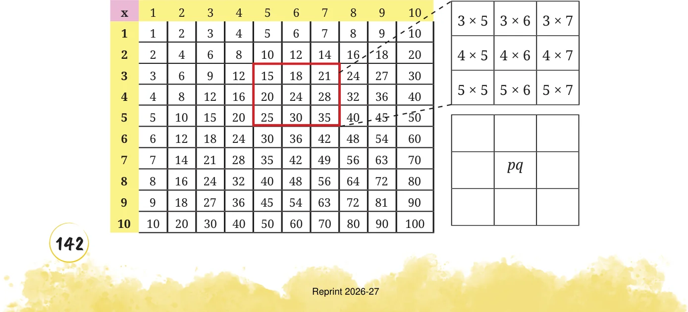

- 1.Observe the multiplication grid below. Each number inside the grid
is formed by multiplying two numbers. If the middle number of \(a 3 \times 3\) frame is given by the expression pq, as shown in the figure, write the expressions for the other numbers in the grid.


- 2.Expand the following products.
- (i)\((3 +\) u) (v \(- 3)\) (ii) \(\frac{2}{3} (15 + 6a)\)
- (iii)\((10a +\) b) \((10c +\) d) (iv) \((3 -\) x) (x \(- 6)\)
- (v)( \(- 5a +\) b) (c + d) (vi) \((5 +\) z) (y \(+ 9)\)
- 3.Find 3 examples where the product of two numbers remains
unchanged when one of them is increased by 2 and the other is decreased by 4.
- 4.Expand (i) (a + ab \(- 3b\) ) \((4 +\) b), and (ii) \((4y + 7)\) (y \(+ 11z - 3)\).
- 5.Expand (i) (a - b) (a + b), (ii) (a - b) (a + ab \(+ b\) ) and
- (iii)(a - b)(a \(+ a b +\) ab \(+ b\) ), Do you see a pattern? What would be
the next identity in the pattern that you see? Can you check it by expanding?